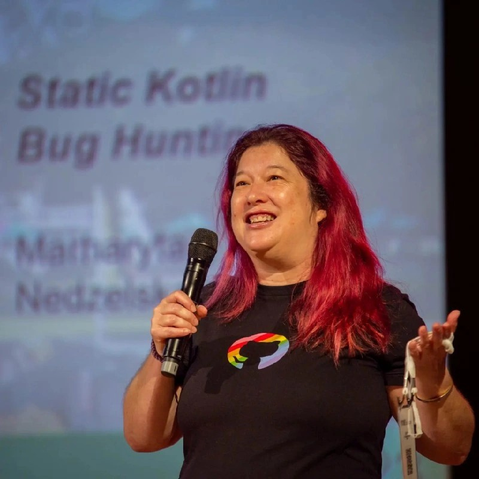
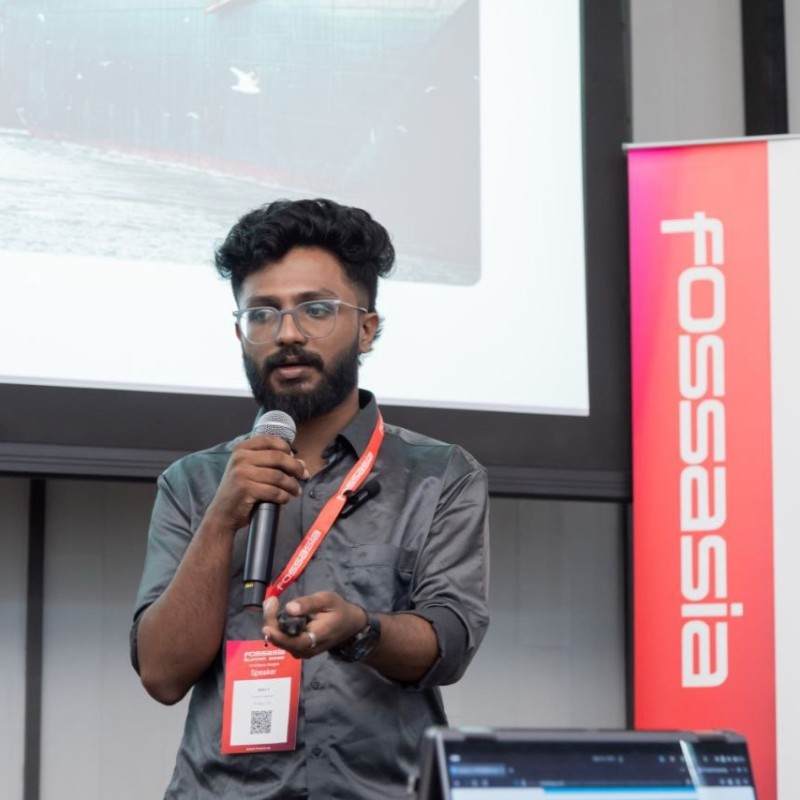

Keynote Speakers
Generative AI & The Future of Python Developers
AI is the hottest topic in tech right now, and Python is the undisputed language driving it. What does this mean for you? To stay ahead of the curve, we must move past "vibe coding" and building simple chatbots. We need to look ahead and apply real engineering skills. This keynote explores the practical path forward: from understanding Pydantic for robust data validation to mastering agentic skills by leveraging LangChain and Agent Development Kits.
So Kiasu, Still Kena Replaced by AI?
Many of us in Asia grew up with the same advice: study hard, choose the right path, and your future will be secure. We did everything right. Extra tuition. Good grades. Stable job. And somehow AI still showed up to the interview. Today the rules are shifting. AI is changing how work evolves, teachers are rethinking how learning happens, and Gen Z is entering the workforce with very different expectations about what a career looks like. In this keynote, I share a story that is part career survival guide and part love letter to everyone who ever felt the playbook wasn't written for them. I'll talk about AI, Gen Z, teachers, open source, and why the most important thing I ever learned wasn't in any curriculum. This talk explores what it really means to stay relevant in an AI-shaped world, and why the future may belong not to those who study once, but to those who keep learning together.
Using Tools Without Being Used: The Four Stages of AI Fluency and What They Make Possible Together
Most conversations about AI at work stop at the copilot: the AI that sits beside you and speeds up what you already do. It is useful, but it is only the first stage of a much longer progression — and professionals who settle there are quietly optimizing themselves into the category of work that AI will replace next. This talk offers a four-stage model of AI fluency — monolingual silos, AI bilingualism, AI trilingualism, and AI multilingualism — and argues that the capacity to move between stages rests on a single habit of mind, stated at two levels. At the individual level, the habit is to use tools without being used by them. I will draw a sharp line between AI-using (faster execution within a defined role) and AI thinking (how a person frames, decomposes, contests, and integrates what the machine produces), and show through concrete examples how a goal-oriented query and an exploratory one on the same question produce fundamentally different kinds of thought. At the collective level, the same habit becomes the precondition for harmony without uniformity. Only the professional who has released the goal-grip can truly sit with a colleague's framing without trying to convert it — letting the clinician's burden remain clinical and the accountant's burden remain financial while still holding them together. I will show how private-assistant culture quietly produces the opposite: uniform AI-mediated voice across a team that masks the disappearance of real disciplinary difference. Drawing on my DeepConnect research, I will argue that shared infrastructure — the kind that lets teams accumulate understanding over time rather than losing it between meetings — is what makes collective sensemaking scale without flattening, and I will locate this argument inside Singapore's AI-bilingual workforce agenda and the SkillsFuture conversation it is shaping. The divide ahead is not between those who use AI and those who don't. It is between those ruled by their tools, and those who, having stepped free of that rule, can finally connect through them.

Talk Title: TBA
Abstract: TBA
Talk Speakers
You Don’t Need an LLM to Understand Your Data
Large Language Models dominate today’s NLP conversations, but they are often the wrong tool for the first and most important question: what is my data actually about? When working with thousands or millions of documents, jumping straight to prompting can be expensive, opaque, and misleading. In this talk, we revisit topic modeling as a practical, scalable, and interpretable way to uncover structure in large text collections. Rather than treating it as a relic of the past, we will explore how modern topic modeling fits naturally into today’s Python data stack and complements LLM-based systems.

Merlions, Agents & Copilot: Trustworthy Python on Azure
Building real-world multiagent systems in Python doesn't have to be dry or mysterious! In this lively 30-minute session, you'll meet a cast of Singaporean-inspired Python agents: recommend hawker fare, track haze, and liven things up with a wisecracking Merlion. See how GitHub Copilot can supercharge development, while practical trust patterns and Azure deployment ensure your code stays friendly, robust, and observable, even when things don’t go as planned. Whether you're new to multiagent systems, exploring GitHub Copilot, or eager to represent Singapore in your code, you'll learn strategies for transparency and reliability that are as fun as they are practical.
Designing Python APIs for Data You Don’t Control
The web isn’t an API, but Python developers often treat it like one. This talk explores how to design Python interfaces for unstable data sources, focusing on schema evolution, defensive parsing, and protecting downstream users.
Tokenization in Transformers v5: Simpler, Clearer, and More Modular
Tokenization is one of the most critical but least understood parts of modern NLP systems. For years, tokenizers in transformers were treated as opaque artifacts tied to pretrained checkpoints, making them hard to inspect, customize, or train from scratch. Transformers v5 introduces a major redesign that changes this paradigm. Tokenizers are now explicit, modular architectures, much like the PyTorch nn.Modules where structure is clearly separated from learned vocabulary and merge rules. In this talk, we’ll demystify how tokenization actually works in Transformers v5. We’ll walk through the tokenization pipeline, explain how the tokenizers Rust backend integrates with transformers, and show how the new class hierarchy enables inspection, customization, and training of model-specific tokenizers from scratch. By the end, attendees will understand how modern tokenizers are built, why the v5 redesign matters, and how to confidently work with tokenizers as first-class, configurable components rather than black boxes.

Inside CPython: How the Open Source Interpreter Really Works
CPython is the reference implementation of Python used by millions of developers, yet few understand what happens beneath the surface when a Python program runs. This talk provides a practical tour of the CPython interpreter, from source code to execution. We will explore how Python code is compiled into bytecode, how the virtual machine executes instructions, how memory management and reference counting work, and how core components like the Global Interpreter Lock influence performance. Attendees will gain a clearer mental model of Python’s internals and learn how this knowledge can improve debugging, performance tuning, and everyday development.
Orchestrating Distributed Cloud Infrastructure with Pulumi and pyInfra
In the era of multi-cloud and distributed systems, managing infrastructure often involves a fragmented mess of YAML files and specialised Domain Specific Languages (DSLs). But why compromise on logic and testability? This session explores a unified, Python-first approach to cloud orchestration. By combining Pulumi for resource provisioning and PyInfra for high-speed, agentless configuration, we can build a robust deployment pipeline entirely in Python. We will dive into a Proof of Concept (PoC) demonstrating how to orchestrate a distributed cluster, handle complex dependencies, and manage it without leaving the Python ecosystem.
Building Practical HealthTech AI Systems with Python: Lessons from HealthPredictor.AI
Building AI systems in practice is very different from tutorials and demos. Beyond models and datasets, engineers must navigate messy data, system design trade-offs, and real deployment constraints. In this talk, I share the journey of building HealthPredictor.AI, an applied AI/ML startup initiative, and the lessons learned along the way. I will walk through how Python was used across the data pipeline, from data processing and model development to system integration. We will explore key challenges such as handling imperfect data, making pragmatic architectural decisions, and balancing accuracy with usability. This talk focuses on practical system design, trade-offs, and lessons learned from building an applied AI/ML system from a startup initiative perspective. This talk builds upon a version previously presented at FOSSASIA Summit, an international conference with over 5,000 attendees, and has been further expanded with additional Python-focused content and technical depth for the PyCon audience. Attendees will leave with practical insights they can apply to their own AI projects.
How to Write Terrible Python Code (And Why It Works… Until It Doesn’t)
What if we deliberately write the worst Python code possible? In this talk, I will intentionally write Python code full of classic anti-patterns, global state chaos, god functions, mutable default arguments, swallowed exceptions, over clever one liners, and inheritance abuse. Each example "works", until it doesn’t. Through short live demos and interactive moments, I will unpack how these bad code impacts, how Python actually behaves, and how small decisions slowly turn into fragile systems. I will refactor each example into a simpler, more Pythonic version and discuss the thinking behind the change. This is not a talk about shaming bad code. It’s a talk about recognizing human behavior in software design, developing better instincts, and learning to value boring & readable Python over clever solutions. Attendees will leave with a sharper eye for problematic code, practical refactoring heuristics, and a renewed appreciation for clarity over complexity.
Beyond the Weights: Surviving Python's AI Supply Chain Minefield
In March 2026, attackers compromised Trivy — a security scanner trusted by thousands of CI/CD pipelines — and used it to steal PyPI publishing tokens from LiteLLM, one of the most widely deployed AI gateways in the Python ecosystem. Within hours, poisoned package versions were live on PyPI, silently harvesting cloud credentials from every Python process on infected hosts. The malicious code never needed to be imported — it ran on interpreter startup. This is the new shape of supply chain attacks in the AI era. The threat surface has expanded beyond requirements.txt typosquatting into territory most developers aren't watching: weaponised CI/CD tooling, stealthy .pth file persistence, and inference-time backdoors hidden inside GGUF chat templates that manipulate LLM outputs without touching a single weight. This talk dissects both attack classes with technical depth, then pivots to practical defence. Drawing on experience as the Global Red Team Lead at ByteDance/TikTok, I'll walk through how our detection pipeline would have caught the LiteLLM compromise, and how developers can apply the same principles with open-source tooling. Attendees will leave with a concrete, layered defence strategy they can start implementing the same week.
SKILL.md is the SOP your AI agent never had
Long prompts can look harmless at first. Over time, they can become hard to manage. This talk introduces SKILL.md as the standard operating procedure your AI agent never had. It is a simple way to turn fragile instructions into reusable AI behaviour. We will look at why ordinary prompts break down, how SKILL.md gives agents clearer roles and limits, and how it fits into Python workflows with sklearn, LangGraph, and multi-agent systems without replacing code that should stay deterministic.

Beyond the System Prompt: Scaling AI Capabilities with Agent Skills
As LLM-powered agents move from simple chat interfaces to complex autonomous systems, developers face a recurring challenge: the "Monolithic Prompt." Cramming every tool, instruction, and piece of documentation into a system prompt leads to high latency, increased costs, and "context lost in the middle." In this session, we explore Agent Skills, an open standard and Python library designed to modularize agent capabilities. We will dive into the architecture of a "Skill"—a structured bundle of Markdown instructions, Python scripts, and reference data—and demonstrate how agents can dynamically discover and load these skills only when needed. You will also learn about how Agent Plugins for AWS equip AI coding agents with the skills to help you architect, deploy, and operate on AWS. Agent plugins for AWS are currently supported by Claude Code, Codex, and Cursor.
Workshop Speakers
AI Kopitiam: Building Graph Workflow Agents with ADK
Ever wondered how to make an AI flawlessly understand a "Kopi O Kosong Peng" order? Step into the AI Kopitiam! In this hands-on workshop, you’ll learn how to use the Agent Development Kit (ADK) to build stateful, reliable, graph-based AI agents. Say goodbye to unpredictable chat loops and learn how to structure complex AI workflows while building your very own virtual Kopitiam assistant.
Building an AI Agent Workflow with LangGraph and MongoDB
## Learning Outcomes
- Recognize common Python anti patterns before they cause real damage
- Understand why patterns like mutable defaults, global state, and exception swallowing are
dangerous
- Develop better intuition for writing readable, maintainable Python
- Refactor problematic code using simple, practical techniques
- Make safer design decisions under time pressure
Do you know how well your model is doing? Evaluate your LLMs
Large Language Models (LLMs) are becoming central to modern applications, yet effectively evaluating their performance remains a significant challenge. How do you objectively compare different models, benchmark the impact of fine-tuning, or ensure your LLM responses adhere to safety guidelines (guard-railing)? This hands-on workshop addresses these critical questions.
We will begin with an essential revision of the Hugging Face Transformers library, covering basic LLM inference and fine-tuning. The core of the workshop will introduce and provide deep practice with Lighteval, an efficient and powerful LLM evaluation framework. Participants will learn how to leverage Lighteval to compare various LLMs available on the Hugging Face Hub using a range of pre-built tasks and metrics.
Finally, we will delve into advanced evaluation techniques, focusing on creating custom tasks and metrics tailored to unique, real-world application requirements. Participants will learn how to prepare custom datasets on the Hugging Face Hub and integrate them into Lighteval for precise, domain-specific evaluation. By the end of this workshop, you will possess the practical skills to rigorously evaluate, benchmark, and fine-tune your LLMs with confidence.
Petr Andreev
Intelligent Investors community ("Запаренные инвесторы") · Self-employed
LinkedIn ProfileHighLoad Python: SIMD, GPU, TPU. Acceleration Patterns: Theory, Practice, Benchmarks. Looking into Silicon.
You’ll learn a repeatable workflow to accelerate real numeric kernels using CPU SIMD, GPU arrays + custom kernels, and TPU/XLA compilation—all from Python.
For each acceleration tier we follow the same loop: theory → minimal working code → benchmark that confirms (or disproves) the theory. You’ll leave with a small benchmark harness you can reuse, plus a decision checklist for when SIMD is enough, when GPUs pay off, and when XLA/TPU is the right move.